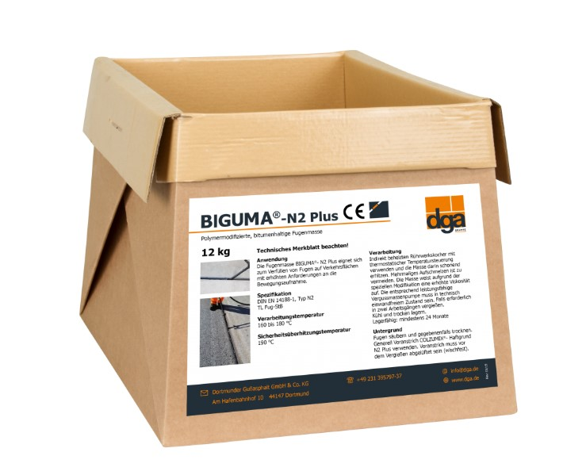
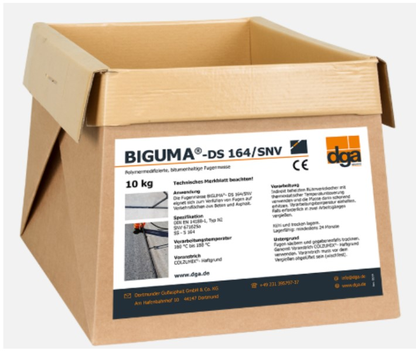

Полимерно-модифицированная, битумсодержащая мастика для заливки швов
BIGUMA®- TL 82

Мастика, которая применяется без праймера, успешно прошла испытания BAM (Федеральное ведомство по исследованию и испытанию материалов)
BIGUMA®- Connect

Пластично-эластичная, битумсодержащая мастика для заливки швов для холодных климатических зон
BIGUMA®- Arctic Grade
Полимерно-модифицированная, битумсодержащая мастика для заливки швов, находящихся под интенсивным движением
BIGUMA®- N2 Plus
Полимерно-модифицированная, битумсодержащая мастика для заливки швов, отвечает требованиям Швейцарского стандарта 670 281a-N
BIGUMA®- DS 164/SNV

Полимерно-модифицированная, битумсодержащая мастика для аэродромов с усиленным движением швов